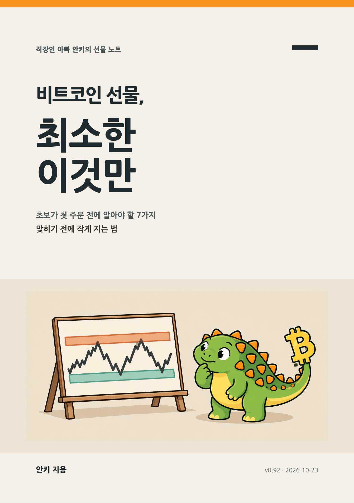

직장인 아빠 안키의 선물 노트 · 무료
비트코인 선물, 최소한 이것만
초보가 첫 주문 전에 알아야 할 7가지 — 맞히기 전에 작게 지는 법
이 책은
직장인 아빠 안키가 과거 매매 경험을 돌아보며, 맞히는 법 대신 작게 지는 법을 정리한 노트입니다. 회고와 원장 통계·가상 예시를 구분해 읽도록 구성했습니다. 선물을 권하는 책이 아니라, 첫 주문을 누르기 전에 알아야 할 최소한을 정리했습니다.
- 주문 전에 ‘틀리면 얼마 → 그래서 수량은 이만큼’을 계산한다
- 계획보다 더 잃게 만드는 구멍 다섯 개를 알아본다
- 포지션마다 TP·SL로 끝난 원인을 적고, 쌓인 기록에서 내 스타일을 찾는다
차례
- 들어가며
- 1부 · 판을 알다
- 01 · 선물은 무엇을 사고파는가
- 02 · 전설의 수익도 몇 판에 몰렸다
- 2부 · 작게 지는 도구
- 03 · 틀리면 얼마 — 주문 전 숫자 하나
- 04 · 손절 자리를 먼저 긋는다 — 내가 그린 차트
- 05 · 계획보다 더 지는 다섯 구멍
- 3부 · 나의 조건, 나의 스타일
- 06 · 직장인은 다르게 진다
- 07 · 내 원장에서 내 스타일을 찾는다
- 맺는말
- 부록 A. 거래소 화면 가이드
- 부록 B. 차트 설정 최소한
- 부록 C. 활동지
- 출처
이 책은 거래 구조와 위험을 이해하기 위한 학습 자료이며 투자 권유나 수익 보장이 아닙니다. 실린 거래소 화면은 기능 위치를 보여주는 과거 예시이며 특정 거래소 가입을 권하지 않습니다. 해외 거래소의 국내 이용 가능 여부와 세금은 읽는 시점의 금융정보분석원·국세청 안내로 확인하세요. 일부 도해는 GPT 이미지 생성 도구로 만든 교육용 개념도이며, 가상 수치와 작성 예시는 실제 거래 성과가 아닙니다.